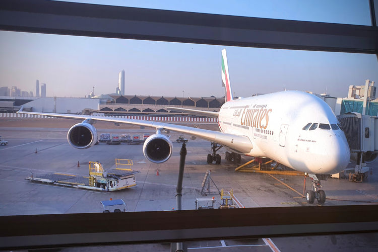
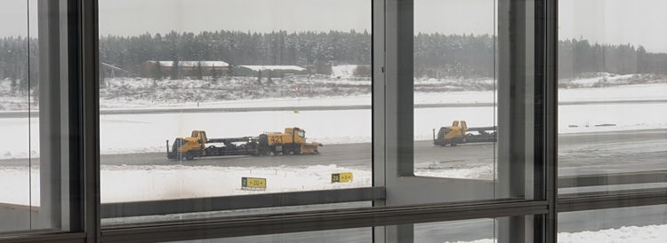
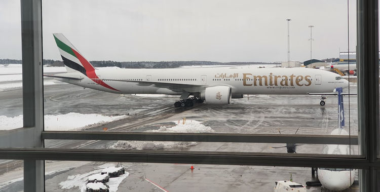
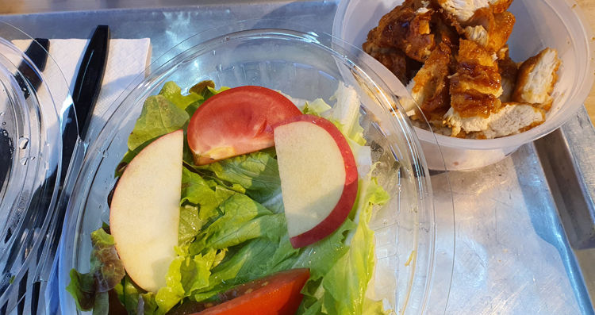
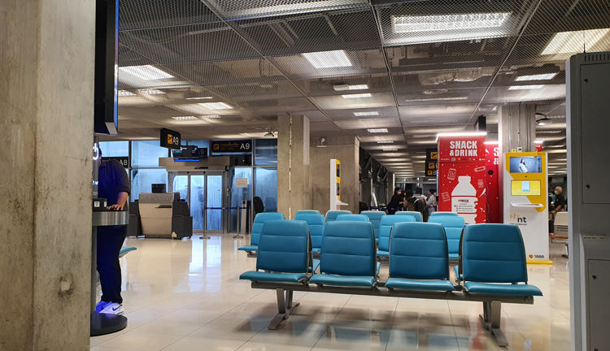

A collection of adventures
Unintentionally hilarious, unexpected and terrifying, and some programming
A few short stories I have found myself part of.
Tips
On devices with a keyboard you may use arrow keys up and down to scroll.
You can also navigate between chapters by using the arrow keys to the left and right.
At the top you may click the brush icon to change the color theme. I highly recommend checking the themes out before you continue to find the one that suits your reading best.
#emirates #aircraft/a380 #traveling/flying #story/flying-big-finally
Flying big, finally
The A380, majestic beast that it is, has never trafficked any route I've flown. That is until I required a last minute flight to Thailand and Emirates came up as a competitive price alternative with two layovers.
This was going to be great, a high adventure no doubt! With one of the most reputable airlines in the world and the premier carrier using the A380 no less.
The fact that there is an entry here about this trip would be indication that this journey indeed turned in to a real adventure. After I had reached my destination I even told folks the trip was worthy of a literary epic when asked how the flights had been.
True literary epic might be a bit of a stretch, but here we are!
 Emirates A380 at Dubai airport.
#dubai #traveling/flying #airport/dxb #story/flying-big-finally
The hours of layover
Finally up to temperature
After the hours of walking I was finally up to temperature and rather hungry. I filled up my thermos with water from a drinking fountain and headed to gate C20 which I had passed many times and only ever saw a single person at. Once there I slumped on one of the many benches, ate the last of my second baguette, read my book a bit and contemplated hibernation.
My body and mind were exhausted and I was not sure I would wake up from my alarm even at the relatively quiet gate C20, the circadian laws hitting me hard. This was not the moment to fall asleep.
When I exited the gate area I noticed there were far fewer people in general. I consulted the departure screens, a large wave of departures had taken place. Many of the travellators were empty and my mind started flirting with ideas of running along them, arms flailing and screaming as if hunted by a lion. Or better yet walking the opposite direction pretending to be stuck at that spot until someone noticed me and started a commotion.
Not tired enough to listen to the voices in my head I decided this would be my moment to find someone to talk to, surely there would be some other people around that wouldn't mind some company - or at least some idle chatting.
I started doing another lap of B-C terminals and quickly found my self-assigned task might not be as easy as I had thought. Most people were sleeping - probably waiting for the next big wave of departures just like myself. Those that were not sleeping were glued to their phones. Disturbing someone who might be in a video chat or watching a movie didn't feel right, find someone reading a book instead, disturbing that feels more acceptable somehow.
On more than one occasion I reflected I may be the only one at that airport that reads books. 45 minutes in to prowling it finally happened, I spotted a fellow reader in the distance and better yet they were looking up from their book. I immediately changed course, almost walking in to the path of an oncoming golf cart. They were many and constantly ferrying people round the terminal.
After the cart had departed my new path I saw the reader had put the book in their carry-on and were looking with a firm gaze at the nearby gate announcement screen which now read "boarding". I slowed and sure as poop in my baby's midday diaper a few seconds later they departed their seat and headed toward the gate.
If anyone was observing me disappointment would have been apparent before I set my mind to not dwell on it. After another half lap of the two terminals I said Screw it! to myself and vied to approach anyone that looked talkative. Maybe someone using a computer rather than a phone, or maybe a group at one of the restaurants.
A few steps later a lone girl sitting at a table for four at an otherwise deserted restaurant caught the corner of my eye. She was staring rather intently at a screen but there were no flickering lights of moving movie scenes directed at her face, and she had not spoken. She was probably reading! GO GO GO!
 Almost deserted restaurant at DXB.
Almost deserted restaurant at DXB.
Shoutout to the between-jobs accountant
"Would you mind some company?" I asked while approaching her table.
"Yes", she replied while seemingly indicating that she meant "No, I wouldn't mind". I froze, my tired mind was not sure exactly how to proceed - Stupid opening line in a place where people are tired and might not natively speak English!
She probably noticed my momentary hesitation and indicated more clearly to a chair. Queue "whoop-whoop", "woohoo", "yea!" and other happy noises inside my head.
Turns out she had been working in the financial sector, recently quit her job and before her next gig started up she was going to visit her sister. A sister who - by international airport destination measurements - lived not far from my port of origin, now what's the chance of that I wonder.
I have a feeling I rambled on a lot and didn't nearly ask her enough questions, but then again she might have been put off by being questioned in public by a stranger too much. It was lovely to have a break from walking and this young lady from Vietnam through Hong Kong now working in Singapore spent the next two hours conversing.
Once her flight was coming up she excused herself. I almost fell getting out my chair while getting up from the chair because after the inaction of the previous flight, hours of more or less constant walking and then sitting for two hours cramps hit my calves with fierceness the likes I have seldom felt.
Considerable effort was spent to not show this stranger of my wobbly legs and beads of sweat threatening to appear. I waved and thanked her for the company and studiously pointed my toes in the opposite direction to minimize any chance of an awkward side-by-side walk after saying goodbye. Not that my lower legs permitted anything other than a slow stagger at that moment.
My left big toe also started pinging my brain for attention, blister coming up probably.
The gasses I had been harboring in my guts quickly made their volume and whereabouts known after a few short steps, though the rumbling might indicate more than just some methane. My calves were grateful for the travellators as I made my way to the secluded toilets I had scouted out earlier. The bad had seemingly gained weight during my chat, a voice in my head spoke up sarcastically to tell me "Maybe the girl had secretly dumped a bunch of contraband in my bag while I was chatting". Once at the porcelain throne my knees felt weak and I sat heavily with a sigh.
Final moments
Feeling far lighter afterwards I stretched quietly in the dimly lit terminal extension, acutely aware that there were people sleeping under and behind the rows of seats along the walls. I refilled my thermos and while stowing it back in my backpack I noticed the sorry state of the last remaining banana, the one gifted to me at the departure lounge at the start of my travels an eternity earlier. The banana had clearly suffered gashes, nudges and poking by the other bag contents and the feet of my shoulder friend of the previous flight. The bruising told me it was probably time to eat it or risk banana mush in the future. It was delicious.
After the chat, toilet break, impromptu banana and realizing just how many hours I had managed to lose I found myself reinvigorated and the remaining time to boarding seemed positively tiny by comparison.
Another lap and half around the B-C departure concourses went by before I told myself it was enough, quarter of an hour remaining before the boarding was to commence. The horde of people at the departure area for the gate spilled out in to the concourse.
I dutifully waited, we're all getting on the same aircraft after all. Besides, my tired mind was not feeling like bustling elbow to elbow with the other patrons at that moment. In this case spoils really did go the patient, because while others had lined up in a long winding queue I just sat back on the now empty chairs next to the boarding desks. Only moments later they opened another desk, which went unnoticed by everyone bustling in queue. When I locked eyes with the boarding agent they were happy to wave me over, presumably hoping that more people would notice and follow my lead.
Being the first time at Dubai airport and the first time boarding an A380 I was almost run over as I walked slowly trying to decipher which arm to use to enter the aircraft. The voice in my head piped up again "Go to the wrong one so you have a reason to tour the entire plane!".
Before we continue let me take you back to what had happened up to that point...
#booking #traveling/flying #story/flying-big-finally #allergy #support
Trying to book
The adventure started already when I made up my mind on the trip and desired to finalize the booking. I picked my desired seat among the few remaining using all the rules I've constructed over the years. In this case my preferred seats were not available for either Emirates flight, but also not the worst. The price and date were far more important in this case. Make it happen!
I noticed a distinct lack of customization options during the booking processes. Especially any way of specifying my food requirements. This led me to googling emirates and food choices which told me I would be able to specify meal choice after logging in and managing my booking after it has been made. At this point I was not able to find anything regarding dietary restriction requests and assumed that it would be similar to most other airlines. How wrong I would turn out to be.
Got as far as paying, after entering my payment details I was greeted with a message "Unable to contact payment services. Please try again." and that ended my first attempt.
Not put down I redid the entire booking again, however the seats I had previously selected now showed as occupied. Most likely reserved by my previous booking attempt which would still be pending. This time I got further, the web-browser redirected to the payment service but just showed a spinner and after 10 minutes of waiting I closed the tab.
Doubtful but might be a problem with my browser, as a software developer I do have some weird settings after all. Third attempt - using another browser with no blockers and relaxed security settings - third seat choice. Stuck in the payment processing again. At this point even the wife heard my noises of frustration and despair across the apartment. Take my money already!
Fourth attempt half an hour later showed one of two flights as only having priority seats remaining. This annoyed me and I decided to wait a bit more to see if my preferred seats would be released from my previous pending attempts.
Got on with my day and a bit later the idea of using their App to make the booking popped up, might yield better results. Downloaded the Emirates App and found the prices had changed a bit since last check with a neighboring day now being cheaper. Much better seat selection was also available. Make it happen!
This time everything worked flawlessly and my booking was paid for and confirmed within minutes.
Recommended shorts regarding seat choices
@jeenie.weenie excellent view on picking aisle seats
@jeenie.weenie picking economy seats
Apparently food is difficult
Fantastic! Going to my daughter! Airbus A380 flight from Dubai to Bangkok woohoo! Emirates!
Time to login and select my meal. After some fumbling I found the meal options which allowed me to select among some predefined choices. However even squinting did not make any special request box appear where I could inform them of my allergies. This was a surprise.
Maybe they just want to you to contact their support so that they can make sure they understand my request. Might just be the secret to their stellar reputation.
Before contacting support I scoured the meal options page and did find a note that there are no nut free options available. Uh oh!
Excerpt from my feedback to Emirates
When booking my tickets I was surprised there were no options regarding food preferences or requests at all. After googling I found I was required to login to manage my booking and meal preferences. Only then is it made clear that nut-free options are not available.
Surely this was not true, surely they can get me some of those cups of fruits that you usually get for breakfast on flights. Or a vegan option without nuts. Something, right?
Time to contact support.
The support seemed offline during the Sunday afternoon when the booking was made. Early next day the support chat was promptly available.
Form the chat with Emirates support - names stripped for privacy of their employee
00:02:59 [Me]: Hi, I would like to request nut free meals for my flights
with booking [number] *******.
00:03:45 [Me]: When managing my booking I am able to select specific meals,
however not able to specify my allergies which are eggs, fish (seafood) and nuts.
00:03:55 [Them]: I'm afraid we cannot gaurentee a nut free meal for you on our flights
// For a few minutes I suggested alternatives such as fruits.
00:07:48 [Them]: We dont currently have a fruit alternative, we can book a
vegitarian or vegan meal for you but we cannot gaurentee that it will be
free of nut based products
00:08:33 [Them]: I request that you carry your own meal onboard
WHAT?! I request that you carry your own meal onboard. What?!
// Continued discussions. I request compensation and they shut me down completely.
00:12:07 [Me]: Can I get a letter stating that some of my carryon weight is food
for multiple flights because you are unable to provide that for me?
00:13:47 [Me]: This is a practical problem now for me, because I have belongings
with me that tally roughly to the limit of your carryon limit, and you are forcing
me to choose my belongings or food.
00:18:41 [Them]: I understand that this puts you in a difficult situation, but
I dont believe we can increase your baggage
00:21:58 [Me]: In that case thank you for being honest with me, if very unhelpful. ...
I had achieved nothing. Well, I had informed them of my allergies as the chat log shows.
In the past I have had last minute booked flights where special meal requests were not able to be fulfilled because they must be filed a certain number of days beforehand.
Every single time the amazing cabin crew of any concerned flight has solved it, checking ingredients of the food, getting fruits if nothing is available. Giving me early choice between the meal options so I can pick one that works for me.
With Emirates I was sure this would be the case as well so I was not too worried. Just very disappointed. However I suspected the prospect of hot food was out of the question with them explicitly stating nothing nut-free would be available.
I really wish they would have informed me of this policy before or during the booking, not after. I would probably have chosen another carrier.
#traveling/bus #story/flying-big-finally #traveling/flying #airport/arn
To the airport
It was bloody early. Long before the moons domain ended. Too early! First goal was to make the airport bus departing from the bus aprons of the central train station at 05:40. This is the time of day when even the city bus drivers are still asleep. Walking it was, at 05:00 in November, in Scandinavia. Cold.
Thankfully I have learnt how convenient it can be to travel with a backpack as main luggage. This was another moment proving it, walking would not pose problem for this traveler. I threaded the carryon backpack over my shoulders and across my chest, groaned while getting accustomed to its weight pulling me forward and shouldered the big luggage on the intended way - sandwiching myself between my precious carryon and the massive heap of baby clothes compressed in to my hiking backpack. Stepped in to my dress shoes - dress to impress and all that - which are easier to take off and put on than my usual boots. After all there was an expected minimum of three security checks and several flights over the next day and a half.
All mittens, caps and other winter paraphernalia were left behind, I was headed tropical after all. A wind breaker with a hood on top of a shirt would have to do. Excitement to be on the way hit and an unconsciously high walking pace follow. Together with being sandwiched between two heavy backpacks the feared cold turned in to welcome whiffs of fresh air. The bus stop soon was ahead of me and the station clocks showed I had walked quickly indeed, too quickly.
Wait wait wait.
Airport transfer bus
I had enjoyed the fresh early morning air. Apparently my fellow passengers with rolling luggage, thick jackets and mittens had not felt the same and requested the driver turn up the heat. Which he did, with a vengeance.
The calf positioned close to the heating element of the bus was soon feeling the burn forcing a relocation of the carryon backpack in between the offending calf and superheated rail. Might explain why some of the pristine bananas I packed earlier were not as happy a few hours later. It was soon hotter in my bus than my equatorial destination was going to be, ridiculous.
By the time we stopped at the single stop between my embarkation and the destination airport I was red faced and utterly thankful to quickly take a few steps outside to cool myself and breathe some fresh air.
Consuming some of the brought food was good and with forced focus almost half the work I had planned for the day was done by the time we pulled up to the airport.
 Airport bus arriving at the airport.
Airport bus arriving at the airport.
Airport chaos
There was none.
I had been warned, seen the news clips of overcrowded check-in halls and security lines stretching outside terminal doors. The shops and restaurants which had been closed my previous trips had opened up again and people were milling about as if the pandemic had never occurred.
Of course I had taken an extra early bus to the airport to follow the airline suggested check-in time of three hours before departure and to counter any sudden reappearance of snow chaos which had plagued half the country the previous few days.
All in all I was early, very early. The departure boards did not list the check-in desks to be used yet. Thankfully the check-in desks did open at three hours before the flight. I suppose most people would not have read the fine print the way I do and might not know or not care about the suggested three hour check-in, because there were surprisingly few people stomping in the queue at that time and I was quickly on my way to the security point.
My metal thermos cup had been questioned in security before - maybe especially since I tend to stuff all the charging cables in there when unused. This time I knew to open the lid, place it in the tray next to the laptop and phone so it can be inspected easily. I was not going to be the one to hold up the line this time.
But of course I was. I did everything from no liquids, belt, laptop to thermos correctly. Except I had a pack of Fisherman's friend in my pocket which made the security agent stop me two steps out of the scanner and ask me what was in my pockets.
"Nothing" was my response which elicited exasperated eyes from the agent.
"Please empty your right pocket" were the next words uttered.
IDIOT! What do you have in your pocket?! went through my head for the split second before my fingers made sense of what I was now fishing out of my pocket.
The departure discussions
Soon let through and requested to always empty my pockets before security in the future. Put on my belt and packed my bag as quickly as I could while minding my motions so as to not appear as if the encounter had rattled me in any way. Which - if anything - probably made me more suspicious than anything else.
There is a little restaurant in the departure area where they have sandwiches acceptable to my allergy afflicted body. As per usual I headed there, but unlike usual it was an order of four baguettes.
"Wow, you are very hungry" the clerk jokingly commented as she rang me up on the till.
In hindsight I should have made it five. But I had already spent a lot of money on this ticket and was now forced to buy expensive airport food to feed myself on the flights.
"I am a bit hungry, but actually the airline has decided to not feed me on my flights because of my nut allergies and their support suggested I bring my own food. So here I am, with full price tickets buying lots of expensive food in the airport because my carryon weight limit and size restrictions did not allow me to pack six meals." which stopped the clerk their tracks.
As soon as the words stopped coming out my month I realized it had been an involuntary reaction of annoyance seeing how much I would have to pay. Their expression was hard to read, it might have been disbelief that an airline would do that or maybe she thought I was remarking on the joke. Not wanting them to believe their joke had offended me I added "Oh, so sorry to offload on you like that. I was very surprised with the reputation of Emirates could not manage nut free meals and it has soured my mood."
They held up their hand in a motion to stop, then turned around and grabbed a banana from the nearby fruit bowl and handed it to me together with the baguettes. While paying and giving my most sincere gratitude some other patrons caught my eye. It as now around lunch time and half a baguette and a pear would be my lunch.
As I rummaging my bad for the laptop, charger and pear the person I had noticed after myself in the queue walked up "It is amazing that they cannot give you anything on a flight, not even fruit?"
There were a number of people who had heard or now heard about my misfortune. Many gasps of surprise were uttered when they heard it concerned Emirates, their excellent reputation creates expectations. It turned in to a bit of a horror-stories-of-flying moment with several people sharing horrifying experiences at the hands of airlines.
Excerpt from my feedback to Emirates
... At the sandwich shop they joked I must be very hungry when ordering four until I told them Emirates would not feed me for my long flights and I was forced to buy food inside the airport, since there was no way I could fit that much food and my personal carryon luggage within the 7kg limit. At which point they offered me additional free fruits while shaking their heads. The exchange sparked a conversation between people around the shop for the next several few minutes.
Excerpt from Emirates customer service response
Regarding the suggestion of bringing your own food onboard and your comment that such food would be included in the 7kgs carryon allowance you had, I am confident that the weight of the food you would bring onboard would not exceed 1 or 2Kgs, for the entire journey.
In the end about half the time I had expected to work ended up on the talking-trash slip of the time sheet. But that would not be a problem, there were hours of flights and layovers left to make up for it.
 Snow clearing convoy at Arlanda airport.
 Emirates 777 taxiing to the gate, my first flight of the trip was approaching.
#emirates #aircraft/777 #story/flying-big-finally
First flight
What is wrong with the seat in front, why are the supports so weird? Oh well, it does not matter, I am in the aisle seat so I got slightly larger than usual footwell. In fact Yay!
How naïve I turned out!
The last few rows had been asked to embark at the same time as priority customers and with my seat on the very last row I was now seated before most other travelers. Curiously I gazed along the aisle to the front of the aircraft to see if any passenger might be heading all the way to my row.
For the next quarter of an hour I engaged in wild short-sighted speculation and judgement of people based on their appearance.
There was the young heavy large man with sweat stains around his neck and armpits marching towards me with determined steps. He will overspill his seat no doubt. Oh no!
Stopped two rows ahead of me, looked at the seat numbers, turned around and forced the queue behind backwards a few rows. Phew!
Next came the class clown. I based this judgement purely on tall lank frame of this younger man, the curly hair, the small round thin framed glasses upon a nose larger and rounder than the thin body would suggest. A clown.
Then there was the good looking young couple, still with hope in their eyes. New love? The two middle seats next to me were still unoccupied, they would probably care more about themselves than me. If I have to have elbow buddies it will hopefully be them. They stopped a few rows short.
Two kids came barreling down the chute next. They might be a split family! A worst case if they come to me! Those kids were old enough to sit by themselves in an airline sense, however any reasonable adult knows the age where they really can not be trusted to open an airline meal on their own, much less do everything required else required during a six hour flight.
They slowed down when they reached the toilets behind me and turned to look for their parents. The parents were halfway along, carrying a lot of luggage and one toddler each. Generally I do not care about babies and toddlers on planes, I have noise cancelling headphones after all. But two children and two toddlers on two adults for all those hours, No No No, not near me! The parents stopped almost at the beginning of the cabin section. Oh the relief!
The unaligned seat supports
Getting a sore elbow from leaning out in to the aisle like the tower of Pisa I withdrew the e-book reader from my luggage under the seat in front and spent the next while enjoying the story. The flow of people diminished and hope was infringing on my mind; I might be seated next to one of the very few empty seats of the flight!
Curiously the two last rows of two seats each along the outside of the aircraft were empty. If someone does sit next to me I will check if I can swap to one of those rows instead, this will be a great, I got options even! Again I was being short-sighted and in this case seemingly even near-sighted too I would soon find out.
Then he was upon me. A large elderly gentleman with a slightly unsteady walk. Motioning that he had the seat next to me. After he had squeezed down in his seat and I got back in to mine he already had his leg in my footwell pushing against my carryon. What is going on? Oh right. The weird chair supports.
Here I should explain that while he made my flight uncomfortable I do not blame this gentleman for anything that had or would come to occur. He is the victim of circumstance and bad design choices. He was in fact very nice and our few conversations were enjoyable if a bit formal and lacking in substance.
In my experience most wide body aircraft economy seating would look something
like the following diagram. With one seat support in between each seat,
leaving one footwell for each passenger in the row behind.
___ ___ ___ ___
||:::||:::||:::||:::||
|| || || || || The double center support is only to make
||‗‗‗||‗‗‗||‗‗‗||‗‗‗|| my art look symetrical, usually it is the
| | || | | same thickness as the other four.
| | || | |
On the two Emirates aircraft I have traveled with the center four seats
had only four supports. Spaced more or less evenly between the aisles.
___ ___ ___ ___
||:::||:::||:::||:::||
|| || || || ||
||‗‗‗||‗‗‗||‗‗‗||‗‗‗||
| | | |
| | | |
Now imagine sitting in one of the middle two seats as the gentleman was. People average or above in size will be forced to angle their outer leg in to the footwell of the seat outside or swivel their entire body in towards the center resulting in their back now being slightly turned to the passenger sitting outside, ME. This is exactly where we found ourselves for the next six hours.
This man would either encroach on my legs or lean sideward over the elbow rest on to me. There was never a time when one of the two were not true.
During one of the times a toilet visit was required by my neighbor he stumbled a bit while trying to get out and reached out involuntarily. I do not mind helping and stood my ground. Unfortunately he snagged my shirt pocket and slightly tore the fabric around the pockets stitches. I felt it, it was an accident and it was already done - I let it go and did not mention it even if it soured my mood further. The man did not notice I am sure.
The pocket had long endured abuse by a baby that has found it amusing beyond belief to hide and retrieve the pacifier from said pocket while riding on my arm. The fact it has not ripped off completely a long time ago is more surprising than anything.
The empty seats
Before getting ahead of the story let me share another slightly weird design choice.
Those empty window seats were looking very attractive, to me and many others. However the gentleman next to me was very much more motivated than myself and did not want to wait for the embarking to even finish and asked me if he could get out to switch seats. I obliged and removed myself from his path.
He had sat down across the aisle for less than a minute when a crew member informed him that those four seats are reserved. Another shuffle and he was back in his seat next to me.
Only minutes later a man from a few rows ahead decided to do the same and again the crew came only moments later to inform that those seats were reserved. This time indicating to the headrests of the four seats. The headrest tissue did have the word Crew on them I noticed. However I doubt anyone would ever notice. The letters were slightly glossy but almost the same shade as the tissue itself making anyone not looking for it dismiss it instantly as a crease or play of light if noticing at all.
This occurred repeatedly up until taxiing and for the first quarter of an hour after the seatbelt sign had been turned off. With passengers coming from the other side of the cabin even to snag one of the empty twin seats. I even tried to curry some favor with the crew by informing some passengers approaching the seats. I failed to even get their attention before they had sat down.
Then again I might well ignore a gesticulating passenger myself when I have my aim set on a toilet or seat. Besides, the crew would probably not have noticed what I had done anyway and just made other passengers angry with myself. I ignored the event after the second attempt.
 Four crew seats on the Emirates 777. I do not think a single passenger noticed the Crew text on the headrest, including myself.
Four crew seats on the Emirates 777. I do not think a single passenger noticed the Crew text on the headrest, including myself.
Fabulous crew
I manage to shove my bag of baguettes on the outside of the seat support in between and what I presume to be a foot guard in the aisle. This was to save the food from the uninvited guest of my neighbors foot in my footwell.
Alright, this would get tiresome very quickly, but I can live with it for a few hours. With my carryon containing food and especially my medicine I do not want to stow it in the overhead bins if I can help it. But if it got unbearable I could pull those things out and put the carryon above and to allow more room for my legs.
When the cabin started settling down I waved one of the crew over and informed them of my allergy predicament and what I had been told by the Emirates support. They seemed shocked and had very clearly not been informed of my allergies at all.
Excerpt from my feedback to Emirates
... I spoke with the flight attendant and mentioned my allergies, she clearly had not been informed that I had any allergies. This is serious, since it meant my information had not been forwarded. I mentioned my conversation with the support and that I was supposedly not getting any food during my flights. She looked shocked and said that she would see what can be found. After a while she came back and had found fruits and an instant noodle cup and asked me confirm that I could eat it based on the ingredients list, which I confirmed.
Excerpt from Emirates customer service response
Cabin Crew were indeed unaware of your situation as no special request was raised by the webchat staff due to the fact that we do not offer nut-free flights, ...
Rebuttal
To be serious for a minute; this is a big red flag for me. That a company choses to not offer nut free alternatives is their choice, however when the staff and crew is not informed of the request they will try to feed said passengers with food which is known to possibly contain the very allergen the passenger was trying to avoid. Not cool!
This also prepared me for the fact they had almost certainly not relayed the information to my final flight, which was purchased through Emirates but conducted by Bangkok Airways.
The delicious noodle cup. Might have been my sense of satisfaction with having once again being proven right that the crew would indeed fix what management seems incapable of - or possibly just hunger - but that noodle cup was fantastic together with part of a baguette. As I mentioned in my feedback to Emirates I was offered an instant noodle cup and fruits by the amazing cabin crew and requested to confirm that it would be acceptable. I can only assume this was supposed to be the lunch of one of the cabin crew. Thank you however gave up their food for me, hopefully you enjoyed the impromptu inflight meal replacement!
The blizzard
This flight took off in November from Scandinavia, a season and place for thick jackets and other winter apparel. On this flight it seemed mandatory for passengers occupying some seats to have brought not only those jackets but the other paraphernalia as well. The gentleman next to me quickly put on his very thick jacket, greatly increasing his volume. Whereby my own allotted space shrank even more.
Soon he was wearing the provided blanket as well. And for the first time ever I had to wrap myself in my blanket as well. The central air conditioning of this Emirates Boeing 777 seems to have some spots in the aircraft which receive far more of the cool air than other. The seats around mine had passengers wearing jackets and often blankets up to their necks. Me and many others multiple times reached up to see if our personal air outlet was accidentally open, it never was.
Just a few rows away most had only a blanket, and often only over their legs. Towards the end of the flight I was blowing hot air over my hands as I would on a frosty Swedish morning while waiting for the bus. I was even asking for tea mostly so I could clasp the warm cup.
A hurry to get off... the aircraft
Shivering from cold and weariness after a long flight with no sleep I waited to see how people would behave when disembarking this time. You never know, might be ordered, civilized and unhurried this time. Haha, we all know that is never true.
We landed smoothly and soon taxied along the long taxiways of Dubai airport. After a minute or three some passengers who started to get out of their seats and reaching for the overhead bins. Why folks? WHY would you do that?
One of the lovely cabin crew came on the intercom and reminded everyone to please remain seated with the seatbelts fastened until the aircraft has come to complete stop at the gate and the seatbelts sign has been switched off. A minute later we came to a gentle stop.
It was as if the start gun at an Olympic event had gone off. The rattle of belt buckles opening could rival a tommy gun for frequency and ferocity. Seemingly half the passengers hurriedly got out of their seats. Either everyone decided to not pay attention or simply ignored the fact that we were stopped on a taxiway and the massive terminal was still far in the distance.
The crew member came on again and loudly called out for everyone to wait until the seatbelt sign had been turned off. The exasperation in her voice was palpable for anyone paying attention, no matter the language. This time she also repeating the message in Swedish, our flight origin had been Sweden after all.
#dubai #traveling/flying #airport/dxb #story/flying-big-finally
Arrival at DXB
Out of the flight I was feeling uneasy, restless and tired all at once. But mostly still cold and feeling the associated affliction of involuntary bouts of shivering. However I probably looked on par with most other people exiting a long flight, apart maybe from those folks subsidizing my economy ticket by paying significantly more for a first class ticket.
The very slight warm air currents of the airport was a very welcome change to the freezing gale of the last few hours. I set of towards the security check point and was soon in the concourse beyond. My flight would not leave for many many hours and the announcement screens did not extend close to long enough to show my flight.
New airport. How many terminals are there? Which would be the expected for me? Are the toilets nice? Do the toilets have bum guns? What time is it? Where should I go?
There was a fork in the road at the announcement screens, one way towards Terminals B and C and one towards A and D. I had no clue where to go. I decided to go in the direction most people were heading. Very quickly those people dispersed, it was probably not my way.
Spotted a gentlemen sporting a vest, shirt and slacks answering questions from a few also seemingly lost passengers. Approaching I extended my half empty boarding card. The card had of course been printed at my port of departure many hours earlier when no gates or boarding times were known. The destination and time of departure was enough for the man to say "I do not know the gate, wait to see gate on the screens.", but he quickly added "This terminal, it will depart from this terminal. Go back up the escalators and walk away from security exit."
Confirmed. I had chosen the wrong path at the junction, heading towards the transfers to Terminal A instead of staying in B-C building. Now I knew where to prowl. And prowl I did. Walking up and down both sides of the very long B-C concourse. Looking for secluded spots with presumably less frequented toilets and hopefully peaceful spots for a rest.
Being the middle of the night I found the lights of the shops, stalls and billboards to be exceptionally bright in the terminal. Eye-wateringly so, children in strollers averting their gaze rather than being fascinated by the brilliance is probably as good an indication of too bright as anything.
 Bright signs at Dubai airport.
Bright signs at Dubai airport.
More bright signs at Dubai airport.
All in all I walked about eight and half laps around the B-C concourse during the nine hours I was there that night. The concourse felt really long, I guessed around a kilometer half lap. With the google maps measurement tools I estimate that the length I walked from end to end is 1.65km, for a total of more than 14 kilometers walking not including detours and zigzags between shops, toilets and impressive windows overlooking the airport aprons. This would explain what happened next and the blisters I found the next day.
And now that we are caught up with what happened before I started looking for strangers to engage in conversation lets continue...
 Pillar or column, column probably, a perfectly fine column... with a decided lack of information, contrary to its appearance.
Pillar or column, column probably, a perfectly fine column... with a decided lack of information, contrary to its appearance.
 Left to terminal B, right to the rest of terminal C. Very very shiny.
Left to terminal B, right to the rest of terminal C. Very very shiny.
#emirates #aircraft/a380 #traveling/flying #food #allergy #nuts #story/flying-big-finally
Finally flying the A380
I ignored the naughty idea intruding on me and used the boarding arm designated for my seat and entered the aircraft. An airy and overall pleasant cabin with wider seats and great leg room greeted me once I reached my seat.
This time around the wait to get a neighbor was significantly shorter. Soon there was a presence next to me beckoning to be let in to the seat next to me.
Immediately upon sitting back down I noticed that the support struts for the seats in this A380 were the same as in the previous B777 aircraft. The dread coming over me was laden with flashback misery and tired exasperation. However it was quickly clear this would not be nearly as bad this time around.
First of all my new friend was not nearly as big as my previous companion. And on top of that the wider seats meant any angling done to accommodate their legs and feet would not be nearly as severe.
Unrequested aircraft facts curtesy of modernairliners.com:
Boeing 777
Cabin width: 5.87 meters
Airbus A380
Cabin width: 6.58 meters (main deck)
As early as felt decent I requested the attention of crew and and again explained about my allergies. Unsurprisingly again I was greeted by a questioning face; they had not been informed.
Excerpt from my feedback to Emirates support
As I now expected [the crew member] had also not heard about my allergies and were very confused as to what to do and told me "just to be sure don't eat any food". Again she told me that she would see what she could find, maybe fruits from business class.
Shoutout, this time to the teacher
My elbow buddy this time around turned out to be a teacher. Very friendly, considerate and knowledgeable. 10/10 would recommend.
They were a currently residing in one of the 'stans - Kazakhstan, Kyrgyzstan, Turkmenistan, Tajikistan, Uzbekistan. I believe I have embarrassingly little knowledge of the region, however I can at least name the countries and find them on a map. I relayed my disappointment in not knowing more about the region and was met with somber nodding - probably expected.
However as we continued talking something crept up from the back of my mind and I started talking about cotton farming and soviet river diversions. The teacher affirmed this was indeed about the region and Uzbekistan in particular. Slowly I started dredging up knowledge I did not know I had. The disappearing Aral sea came to mind and a bunch of facts about the water supplies of the Uzbekistani outback started flowing out of me - unlike the actual water supplies.
It took another 15 minutes before my mind was engaged enough that I put together the source of the knowledge. I had weeks earlier watched a video called Why Russia Destroyed the World's 4th Biggest Lake by RealLifeLore. Highly recommended.
Then I asked about the flags, I believed that one of the 'stans had a flag with the distinction that it is one which counts its territories with markings on the flag. Such as the stars on the USA flag having represented the number of states.
The teacher did not know if this was true because they could not remember what all the flags looked like or if they had any countable markings that may represent regions or states.
It turned in to the next day until I figured out where this belief had come from. It was the answer to a question posed on the podcast Lateral by Tom Scott, Episode 6 at just over the 14 minute mark.
Food services
Compared with the first flight I was surprised with the magnitude of comfort improvement between the first and this flight. The spaciousness was expected, but so very silent and hardly any vibrations at all from landing gears, wind or engines. However the organization of the cabin crew went the opposite direction unfortunately.
Excerpt from my feedback to Emirates
Every meal they did try to feed me the food even after my initial interaction, so clearly there was no team-communication. ...
Apart from [my] food issues the cabin crew were friendly mannered but compared with the first flight it was [...] a bit like a chicken coop. The carts came up and down the aisle a lot because; attendants themselves needed to get past, it had ran out of something, it was full [of garbage] already and a few times the carts were seemingly in the wrong order?
As expected on most flights not everyone can have the meal they prefer. Sometimes not being able to eat might have its silver lining, I did not have to worry about if my choice would be available. I am not sure if the airlines are collecting data on how many did not get their first choice or maybe only if a specific meal ran out.
It is also well known that food is served from front to back. Which means usually a seat in the back is more likely to not get their choice. Around me very many people did not get their choice of beef, and in fact the beef would have been my choice too.
I was given three plums. That was my entire allotment of food for this flight. Apparently they had forgot to load other fruits for business class so there was nothing for the hard working crew to pilfer for me.
O well, my remaining baguette and provided tea was complimented well by the plums.
The folks waiting for beef mains were waiting for a long time. Had it taken much longer for them to be informed of the missing beef and receive fish instead I am sure the first vibrations felt on that flight would have been stomachs grumbling
The delay was long enough for the lucky who had gotten their mains immediately to have already finished their entire meal. It was also long enough that most waiting people had long since finished the drinks they had received. This of course created even more running for the crew as people requested new drinks, most were told the drinks cart was coming around again and others got their new request from a crew member.
The garbage collecting started before the late-eaters had finished so they were stuck with their trays for a very long time or until they requested crew to come specifically for that reason.
The nuttiness continues
The lovely companion I now had next to me had overheard my discussion with the crew about my allergies and so when - to my great surprised - the crew started handing out nuts to every passenger she asked if I would like her to eat hers later. I said I would greatly appreciate it. Thank you!
I also explained that I am generally not allergic to nuts in the air, but with the quantity of bags opened by the hundreds of people on the aircraft might change that. The much more real problem would not become that not a single surface of this aircraft was safe for me. I would need a bunch of wet wipes just to use the outhouse so I can scrub everything from the lock to the seat.
I thought all carrier had stopped with this nonsense in the 90's or early 00's. Seems 2022 was the year I found out Emirates and Thai Airways did not get that memo. I do not expect nut free flights but there is a huge difference between some having some nuts, possibly even brought by themselves and handing them out to everyone. If it is such an important part of the corporate image I can understand if they offer nuts on request.
Honorable mentions
The pilot did an excellent job landing this flying castle. The tail camera revealed we had a not insignificant crosswind because the nose was never pointed directly at the runway as we approached.
A butter smooth touchdown followed by a perfect pivot to let the nose gear down very gently exactly on centerline. Impressive flying, impressive engineering!
The carrier was an utter letdown. The crew was as friendly as I expected and anything negative said here I do not believe to be their fault. The problems seem more systemic to me.
But oh did the A380 ever live up to expectations!
#bkk #traveling/flying #aircraft/a319 #food
Final leg
After getting off the giant of the skies I was hungry, the last baguette had only been for the first meal. The second meals only solid part had been a tiny banana I had missed among the other things in my bag and the one remaining plum.
As soon as I had cleared immigration I headed towards the domestic departures even though it would be many hours still until my last flight. I had managed to sleep a few hours on the six hour flight from Dubai to Bangkok, but the haze my thinking was blanketed in told me it had not been nearly enough. Previous experience told me there were restaurants after clearing the domestic departures gate. Turned my pelvis that way and set off as quickly as my sleepy legs and body would allow. The calves and a developing blister made themselves known when I tried to stretch my legs properly and build some speed down the long hallways.
I felt coordinated and determined if tired, final destination soon at hand. From the outside I probably portrayed a drunkard much better than the smartly dressed man I was going for. More than a day and half of traveling had left very few patches without creases on my shirt and the blister made me favor one leg and the pace was most likely arthritic-leg-joint-speed. Not to mention my expression was most likely somewhere between paralysis, exhaustion and general grumpiness.
 Fresh food was fantastic, delicious chicken salad at Bangkok Suvarnabhumi airport.
The boarding pass had of course been issued when my shirt was still mostly unmolested and they knew nothing of the flight except for the flight number. This made the staff checking boarding cards at the checkpoint for the different domestic departure wings confused and asked what gate I was going to.
I had of course checked the gate on the departure screens while at the restaurant. But they seemed unconvinced. Might have been the involuntary zombie expression. Instead of pushing the issue I turned on my heels and walked back to the nearest departure screen and snapped a photo with my phone.
Upon returning to the checkpoint I showed the photo and was let through with enthusiasm and smiles I know well from the friendly people of Thailand. However in this instance it just seemed excessive, annoying and even mocking!
Departure
The mentioned previous knowledge had never led me to the particular gate area of my departure. I assumed it was just another wing of the airport. However it turns out when you are boarding small flights that require an airport shuttle to a remote aircraft stand you get to pass security and then be stuck in a waiting area with just about nothing. Well there are the vending machines, a general basement feel, a lot of chairs and air-conditioning creating waterfalls down all surfaces even remotely close to any of the sliding doors letting in humid air when used to board the shuttles.
 BKK waiting area for departures requiring shuttle to get to the aircraft.
In the future I will only pass that particular security check when my boarding has started. The restaurants would of course have been a much better place to remain. As it was I was stuck for several hours in this monument to concrete, fluorescent lights and artificially chilled air.
It was a great relief when my flight was finally called. I had tried to do some work, but did not manage to string together more than few seconds of focus and quickly gave up. Programming on a sleep addled mind is never a good idea, you end paying for it when you are later forced to refactor the poop you created.
Compared with my last two flights it was almost comical to see the tiny aircraft lined up on the remote stands we passed with the shuttle bus on the way to our Bangkok Air branded metal bird.
 Boarding the A319 aircraft operated by Bangkok Air for my last flight.
Boarding the A319 aircraft operated by Bangkok Air for my last flight.
An hour left
Surprisingly they had a hot meal for this morning one hour flight. And when I enquired if it contained eggs, seafood or nuts they confirmed it did. The absolutely lovely crew member came back to me a bit later and with seemingly genuine sorrow informed me that they had no alternatives on board. And told me I should contact them before to arrange special meals.
I pointed to the Emirates logo on the boarding pass sticking out of my shirt pocket and explained that I had booked the flights through them and that they had clearly not forwarded my information - of course I already knew they would not have. And explained I had not thought to contact them directly myself beforehand.
To make sure it did not happen again she gave me several methods on how I can get in contact with them in the future for any questions or special requests. This is some excellent service. Even though there was nothing they could do for me except offer additional drinks it was a very pleasant interaction. The quick flight was soon coming in for landing leaving me with much more positivity after the flight than before.
As we were taxiing to the the stand in front of the tiny terminal we were informed that international passengers needed to pick up their luggage separately from the domestic. I figured this applied to myself, since my luggage had been internationally checked in for all three flights. Not a moment had been spent wondering about my luggage - until that moment.
What if my luggage had an even worse fate than me and did not make it?
 Destination reached.
Destination reached.
#parenting
Lime green
"Banana yellow, banana! - baby noises - Lime-green daddy daddy! Daddy! Lime-green!" she loudly exclaimed from the top of my shoulders.
I replied "Yes, you are right, a lime-green car!" while trying to contain a chuckle at my own shortsightedness.
A few hours earlier
"Ok, we can watch one more Magic Fingers video," I said, "but only one more. Then we have to go to school."
Face lighting up she promptly started swiping the row of preview thumbnails representing other videos. A minute or two in to selected video the color lime-green was introduced. Until then all the colors we had encountered in the Magic Fingers videos were the ones you would expect. Green, red, purple, pink, blue, yellow and so on.
Generally we practice all the colors we have learnt with objects we see around us. I did not even repeat the name of the color, but she did, along with the video. As always.
Why would a 2 year old need to know lime-green? was my immediate thought. What do I know that is lime-green to show her? Nothing came to mind. The limes aren't even that kind of green around here.
To my knowledge this was the first time she had heard of the color lime-green.
After school we went to town to get food. She was very happily exclaiming things she recognized from her perch on my shoulders as we walked along the afternoon market street. Suddenly she shouts "lime-green" while pulling my ears. I stopped and swiveled on my feet and would you believe it; the first and only time I've seen a lime-green car in Thailand.
I could not help but chuckle, of course today would be the day we actually saw something truly lime-green, and of course she would remember the sight and sound of the color from a 30 second clip in a five minute video watched between frantic bathing and rushing to school.
Those educational videos are magic!
I wish I could soak up new words with the amazing ability of this multilingual baby.
#morning-musings
Morning musings #1 - The morning toilet break
Being a baby parent priorities quickly straighten out.
In the beginning I mourned waking up at my own pace, time for hobbies, where did the money go?!
I remember the quiet morning dumps with fondness and longing. A year or two in and some respite to use the toilet in peace in the morning is all I want.
I'm not talking about a 20 minute deluxe visit with the phone. What I need is 90 seconds, hell, even that seems excessive. Give me 60 seconds and I'll force my business out with a face contorted and red enough to make Lucifer blush.
This morning musing was brought to you by my luxuriously long, uninterrupted and quiet toilet visit. Thank you whoever is making those colorful edutainment videos for kids!
Here are some AI generated images based on variants of the prompt "man on toilet with devil looking on". Many AI sites apparently find toilet to be so offensive that you can not use it as a word in a prompt. So I had to use bowl or marble throne instead.